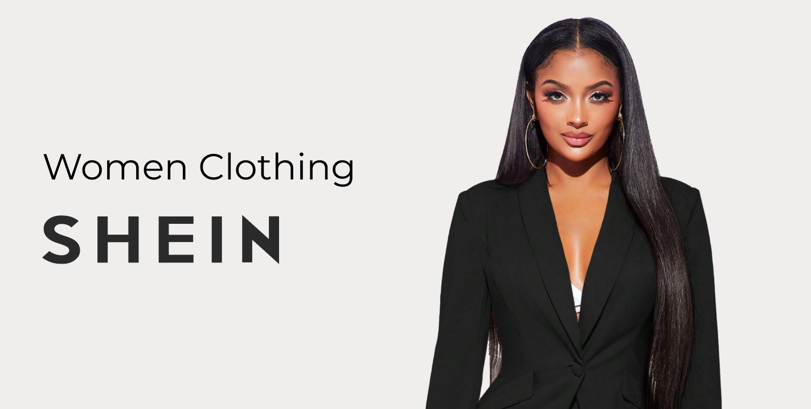
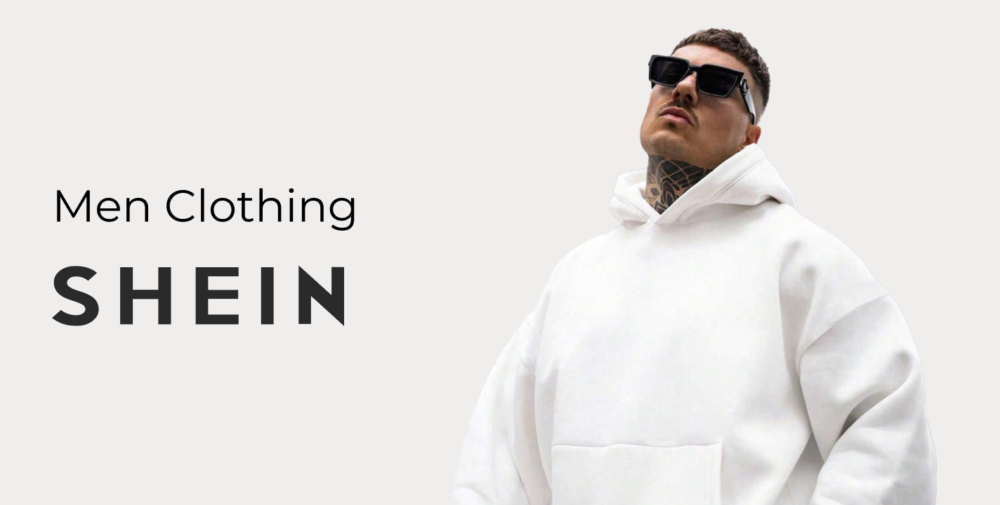
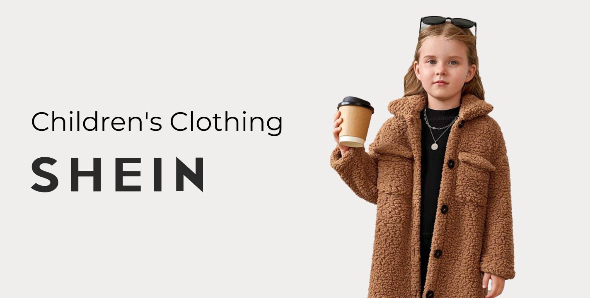
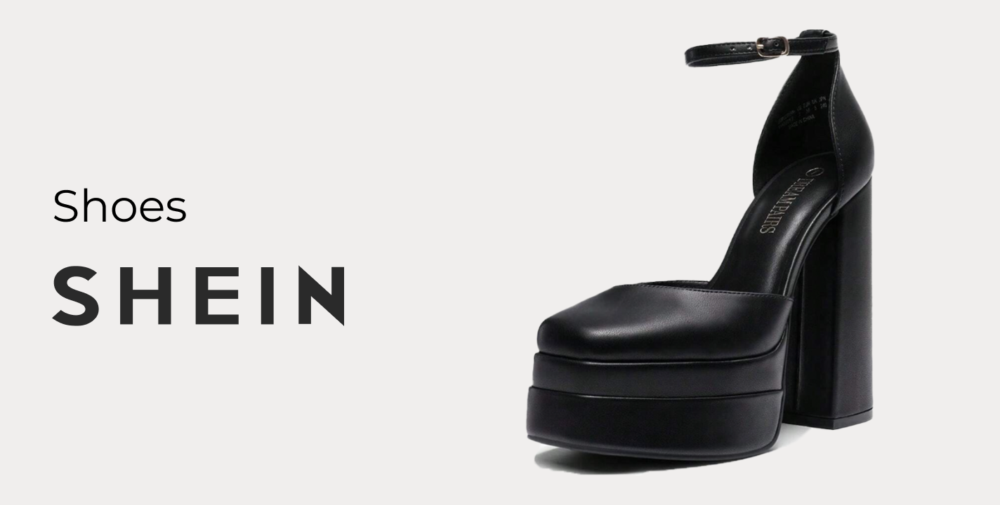
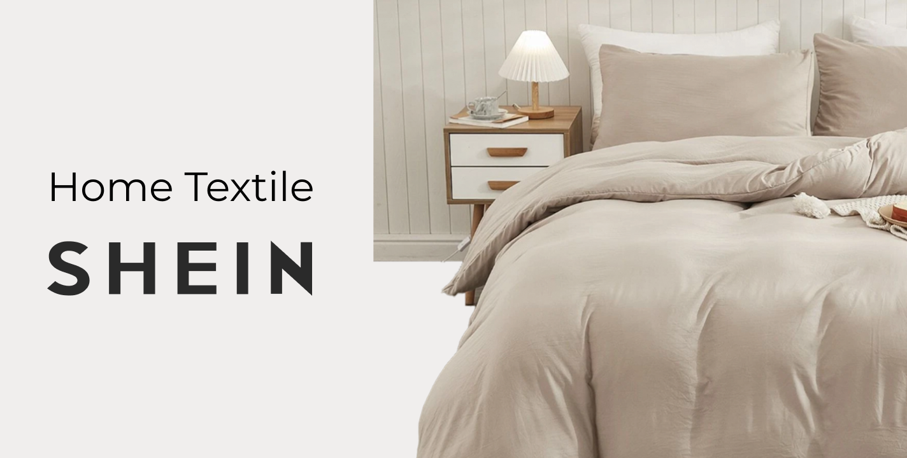

Advantages of Shein
1. Affordable Pricing
One of the most significant advantages of Shein is its pricing strategy. By offering trendy apparel at
extremely low prices, Shein appeals to a broad demographic, especially price-sensitive young consumers. This
affordability is achieved through efficient supply chain management, low overhead costs from being an
online-only retailer, and sourcing products from China, where manufacturing costs are relatively lower.

2. Vast and Diverse Product Range
Shein offers an extensive variety of products, from women's and men's clothing to accessories, shoes, and
even home goods. This wide range ensures that there is something for everyone, regardless of personal style
or preference. The brand frequently updates its inventory, often adding thousands of new items daily, which
keeps customers returning to see the latest offerings.

3. Fast Fashion Model
Shein epitomizes the fast fashion model, quickly turning runway trends and street style inspirations into
affordable ready-to-wear collections. This rapid turnaround is facilitated by advanced data analytics, which
help Shein identify emerging trends and consumer preferences almost in real-time. The ability to quickly
adapt and offer the latest fashion trends makes Shein highly appealing to fashion-forward consumers.

4. Strong Online Presence and Marketing
Shein's robust online presence is another significant advantage. The brand heavily utilizes social media
platforms like Instagram, TikTok, and YouTube for marketing, often collaborating with influencers and
celebrities to reach a wider audience. Their marketing campaigns are highly targeted, leveraging
user-generated content and influencer endorsements to build credibility and desirability among younger
audiences.

5. User-Friendly Shopping Experience
The Shein website and mobile app are designed to provide a seamless shopping experience. Features like
detailed size guides, customer reviews with photos, and frequent flash sales enhance user engagement and
satisfaction. Additionally, the mobile app offers a personalized shopping experience with tailored
recommendations based on browsing and purchase history.
6. Global Reach
Despite being a Chinese company, Shein has successfully expanded its reach to over 220 countries. The brand’s
global logistics network and efficient distribution channels ensure timely delivery across different
regions, further boosting its appeal.
